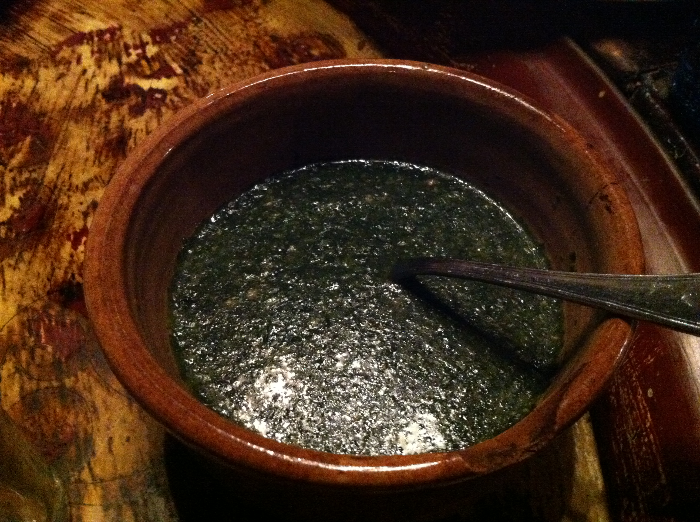

Molokhia

Descrtiption
Almost everyone I know loves Molokhia and it is a mother's secret in Egypt to feed little kids other vegetables
too. You see, when kids pass their first year, and some people even do it earlier, we introduce the famous rice
and Molokhia combo to them. 99.9% of the kids love it, after they get used to it, Egyptian moms start their
tricks. Put a pile of rice with Molokhia and hide anything in there—Broccoli, peas, carrots, beans.... and so
on. Just make sure to cut them into small pieces and the kids will gladly lick their plates. Of course when they
get older they will start to object, but at least they got something and you'll feel good about their dinners.
Ingredients
- 2 Tablespoons ghee
- ½ tablespoon crushed garlic
- 1 ½ tablespoon dry coriander
- 1 cube chicken bouillon
- 2-3 cups chicken broth
- ¼ teaspoon baking soda
- 2 Tablespoons to ¼ cup tomato sauce
- 1 (400g) package of frozen Molokhia
- Salt to taste
Recipe
- In a deep pot over medium-high heat melt ghee then sauté garlic for 15-30 seconds until lightly golden and
fragrant.
- Add coriander and keep stirring for another 30 seconds.
- Pour in one and half cups broth and sprinkle the bouillon cube.
- Stir everything together until bouillon is dissolved. Stir in the baking soda if using.
- Add the Molokhia, and turn down the heat to medium low,. Using a whisk stir until the Molokhia has melted
completely in the broth.
- Pour in the tomato sauce and stir well.
- Check consistency of the Molokhia, It is going to be thick. If you like it that way then do not add any more
broth but if you want it thinner then add broth until you reach the consistency you love.
- Now Check the taste if you need more sweetness and tartness add more tomato sauce. If it needs more salt add
salt to your liking.
- Continue cooking Molokhia until the leaves are cooked and does not taste raw anymore.
- Molokhia is usually done when it just starts boiling all over on low heat.
- Do not cover Molokhia immediately, let it cool down completely before covering or serve directly with rice,
chicken and pita bread.Do not cover Molokhia immediately, let it cool down completely before covering or
serve directly with rice, chicken and pita bread.
Home